CS180 Project 1
In this project, I colorized Prokudin-Gorskii glass plate images. Each input image has three grayscale images stacked vertically in BGR order. I split the image into B, G, and R channels, aligned G and R to B, and stacked them into one RGB image.
Single-Scale Alignment
For the small JPG images, I used an exhaustive search over shifts from
-15 to 15 pixels in both directions. I used sum of squared
differences as the score. I cropped the border before scoring so the black and white
borders would not affect the result too much.
For each candidate shift, I used np.roll to shift the channel, compared
the center crop to the blue channel, and kept the shift with the lowest SSD score.
I report shifts as (dy, dx), where dy is vertical shift and
dx is horizontal shift.


Image Pyramid Alignment
The TIFF images are much larger, so single-scale search would be too slow. I used an image pyramid. I downsampled the image by a factor of two until it was small, found the shift at the small scale, then scaled the shift back up and refined it at each level.
The recursive function first aligns the smallest version of the image. When it returns to the next level, I multiply the previous shift by 2 and only search a small window around that estimate. This keeps the search fast while still allowing large shifts in the original image.
For the pyramid version, I used normalized cross-correlation (NCC) on the cropped image centers. I subtract the mean from both cropped images and compute their dot product divided by the product of their norms. Higher NCC means a better match.
| Image | Green shift | Red shift |
|---|---|---|
| cathedral.jpg | (5, 2) | (12, 3) |
| monastery.jpg | (-3, 2) | (3, 2) |
| tobolsk.jpg | (3, 3) | (6, 3) |
| church.tif | (25, 4) | (58, -4) |
| emir.tif | (49, 24) | (64, 44) |
| harvesters.tif | (60, 17) | (124, 14) |
| icon.tif | (41, 17) | (89, 23) |
| ilemselga.tif | (40, 7) | (130, 11) |
| melons.tif | (81, 10) | (178, 14) |
| religous_painting.tif | (28, 3) | (68, 7) |
| self_portrait.tif | (79, 29) | (176, 37) |
| siren.tif | (49, -6) | (96, -25) |
| three_generations.tif | (52, 14) | (111, 11) |
| wharf.tif | (15, -7) | (82, -16) |
| extra_1.tif | (47, -12) | (86, -43) |
| extra_2.tif | (59, 6) | (124, -5) |
| extra_3.tif | (32, 51) | (84, 101) |

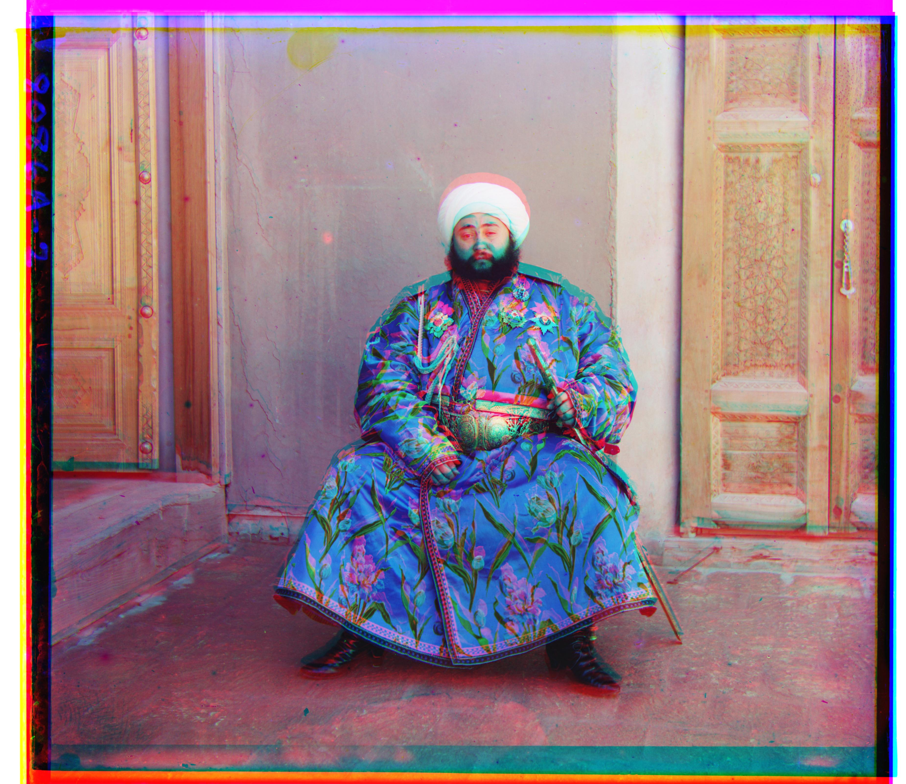
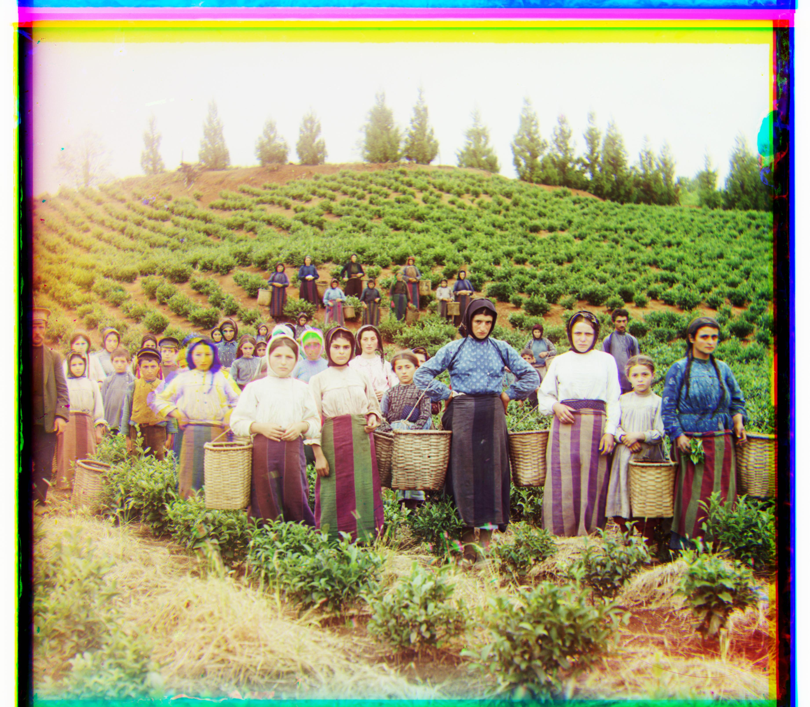
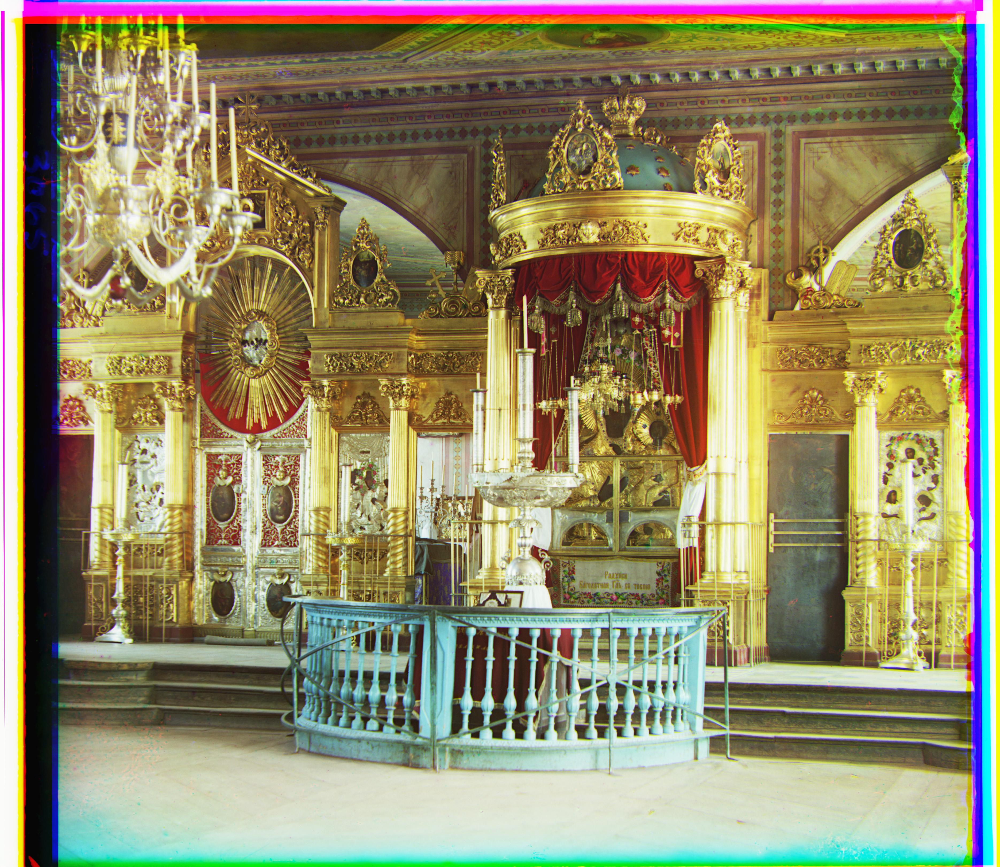

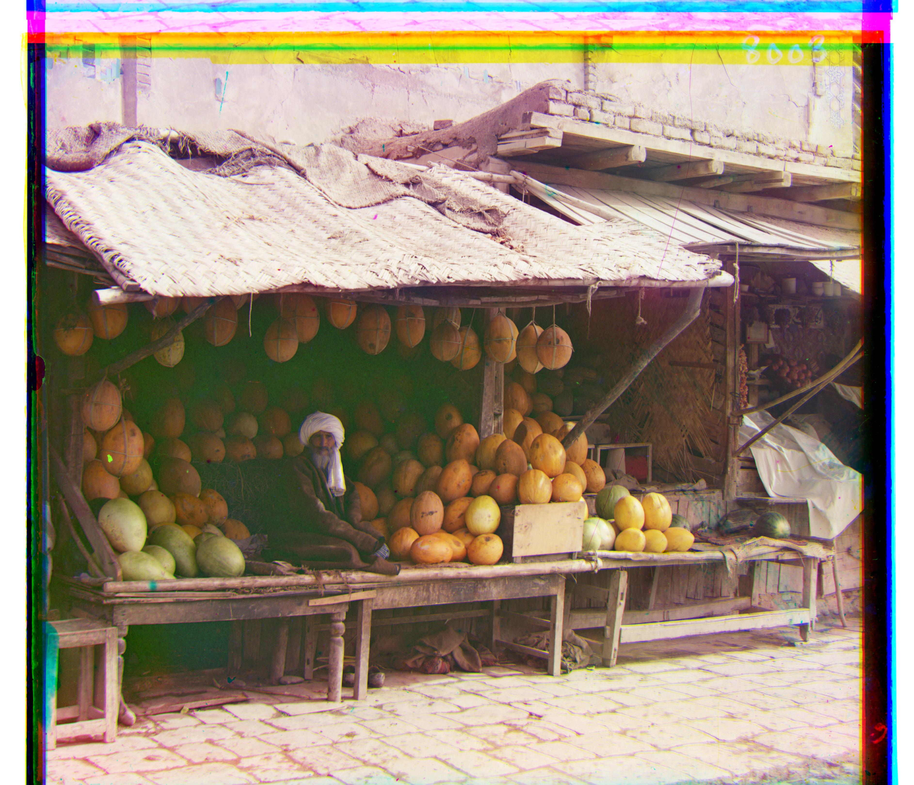
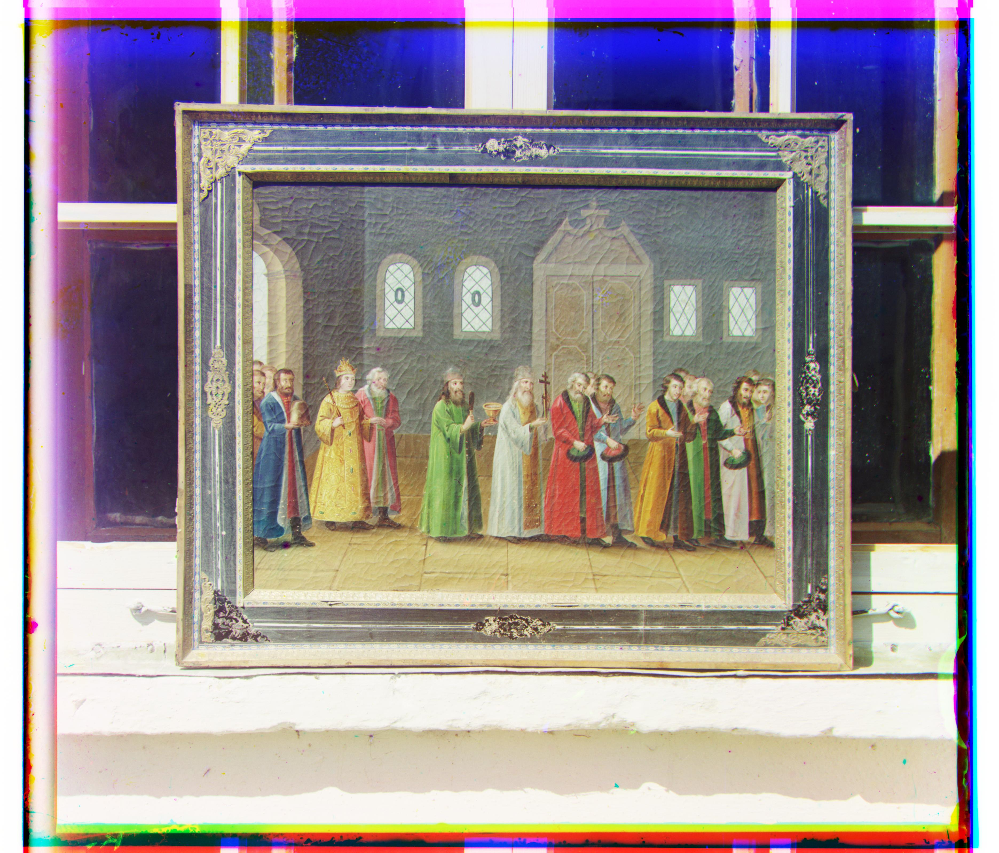

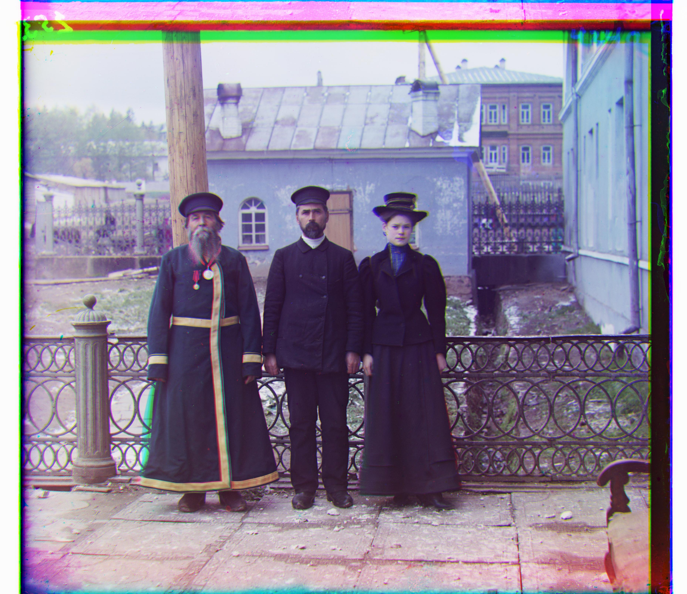
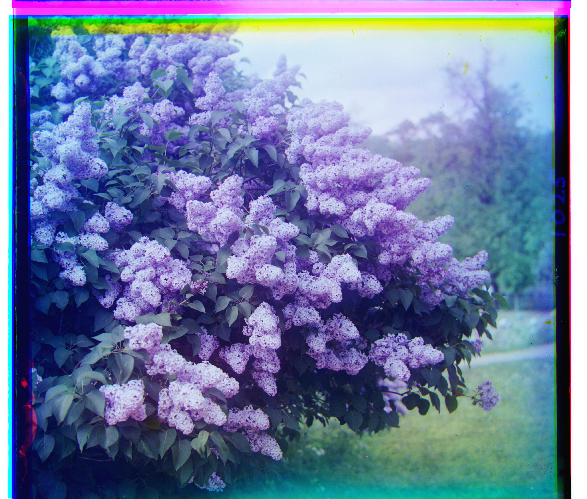
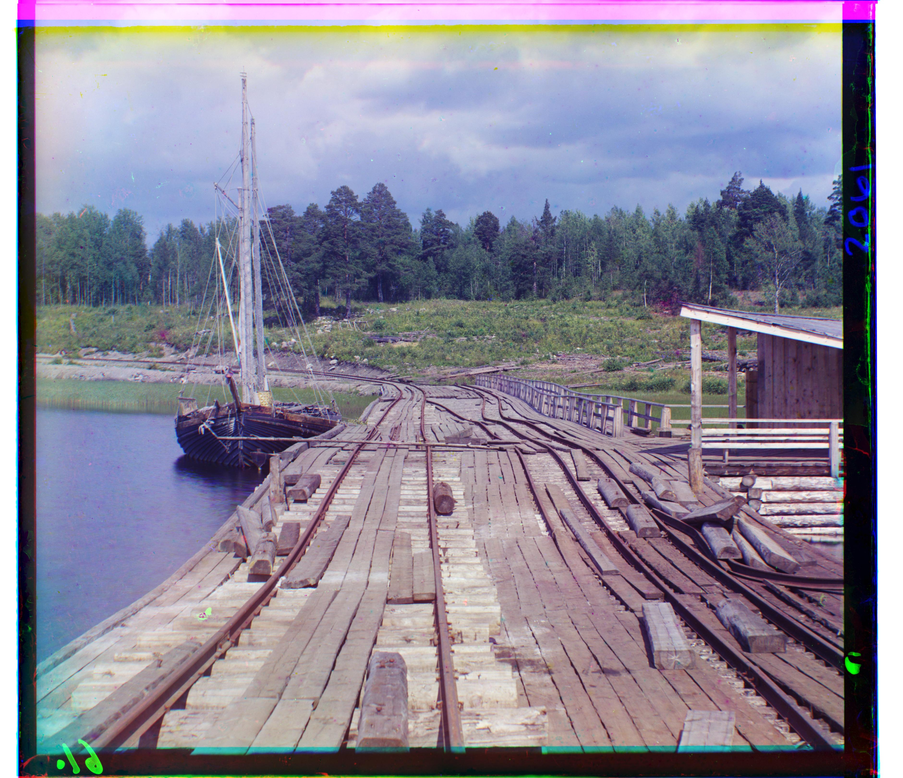
Additional Images
I also ran the same pyramid alignment on three additional glass negative images from the Prokudin-Gorskii collection.
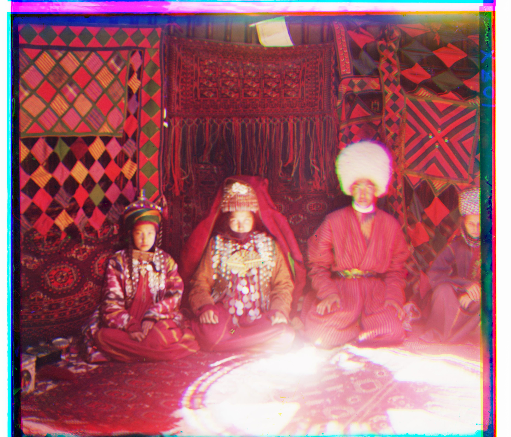
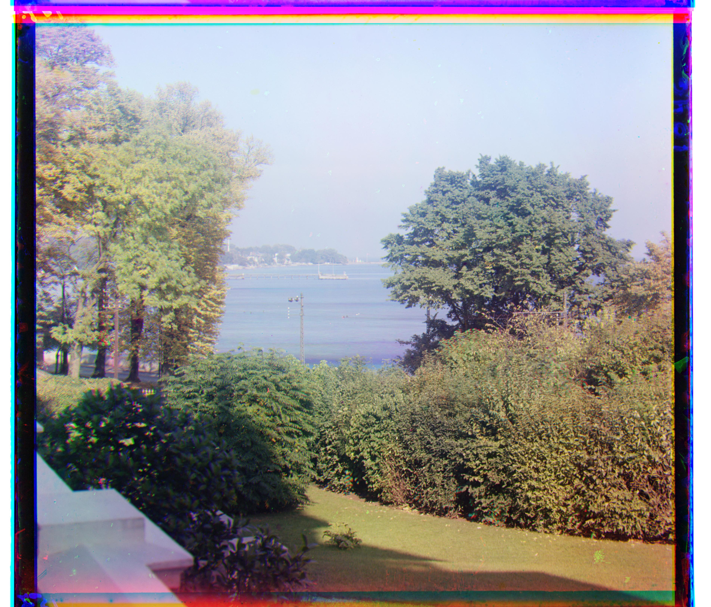
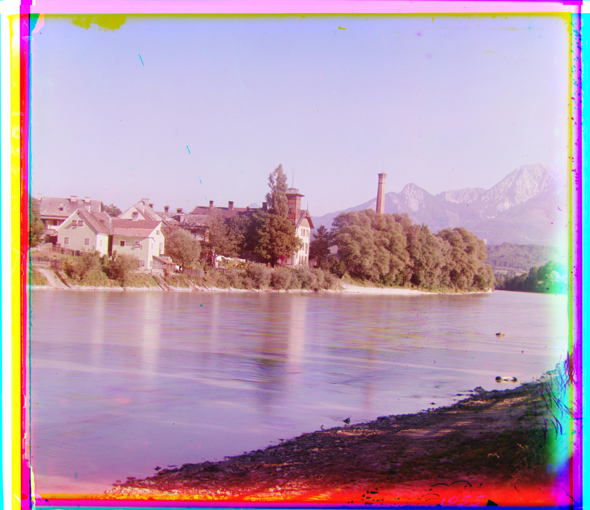
Better Features: Gradient Alignment
The basic NCC result for emir.tif was not very good. The channels have
very different brightness values, especially on the robe, so raw pixel values are not
always a good feature. I tried using gradient magnitude instead. I found the shifts on
the gradient images, then applied those shifts to the original channels.
This was the main failure case for the basic method. With raw NCC, the red channel is pulled to the wrong location because matching brightness is not the same as matching structure. The gradient version uses edges instead, so it lines up the face, robe, and background better.

Notes
Some results still have colored borders because I did not implement automatic cropping. The main content is aligned well for most images. I used the same parameters for all images instead of tuning each one separately.